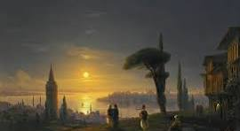
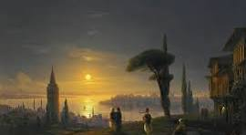
 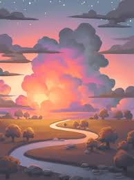
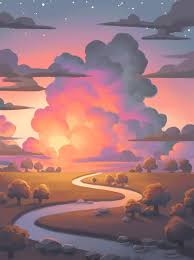
Digital art history is the study of the creation and history of digital art using computational methods, and the history of digital art itself, which traces its origins from early computer-generated images in the 1950s and 60s to modern forms like NFTs . Digital Art History (DAH) uses tools like image analysis, mapping, and network analysis to answer research questions, while the history of digital art covers key moments like Ivan Sutherland's Sketchpad, Harold Cohen's AARON program, and the development of tools like Adobe Illustrator.
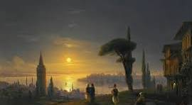
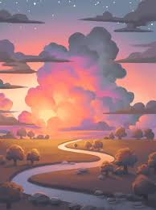
 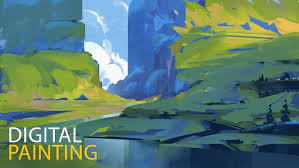
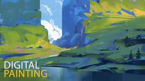
 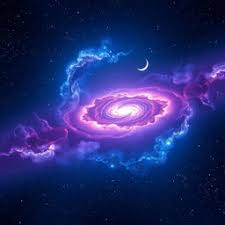
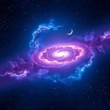
 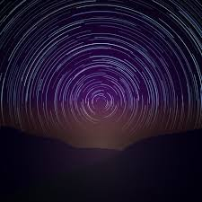
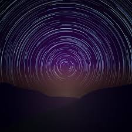
© 2025 Digital Art Gallery | Created by Rutuja